FarmCodeNote / FCN
编程自动化 × 农场经营 × 金融 × 剧情 × 塔防
通过 FarmScript 编程控制机器人、火车与农场生产，同时经营仓库、商店、银行和股市，并应对哥布林袭击；游戏还包含任务挑战、教程、剧情对话与音乐。
目前主线：自 alpha0.3 起，Windows 玩家客户端已切换为 Godot 原生像素界面，使用 GDExtension 连接 C++17 业务核心与 FarmScript；旧 WebView/HTML 客户端保留在历史分支，不再是主版本。Windows x64 预发布包已完成相应验证；macOS、Linux、Steam Deck 和完整通关测试不视为已通过。
进度核对：2026-10-18。近期仍在修正像素 UI、贴图尺寸与仓库显示。下方图片是 2026-10-09 的实机留档，并不代表后续界面修改已反映在截图中。
GODOT / 2026-10-09 历史实机截图
Windows · Godot 4.7.2 · 拍摄于 2026-10-09 · 1200 × 760 原图。以下是当时版本的实机静态画面；Godot 已是当前主客户端，但图片未涵盖 10 月 16—17 日及之后的界面与贴图调整。点击截图查看原图。

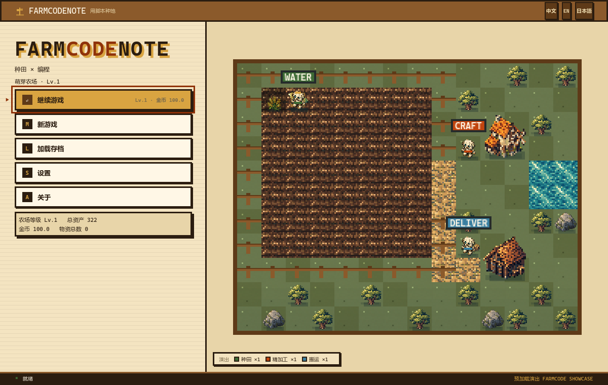

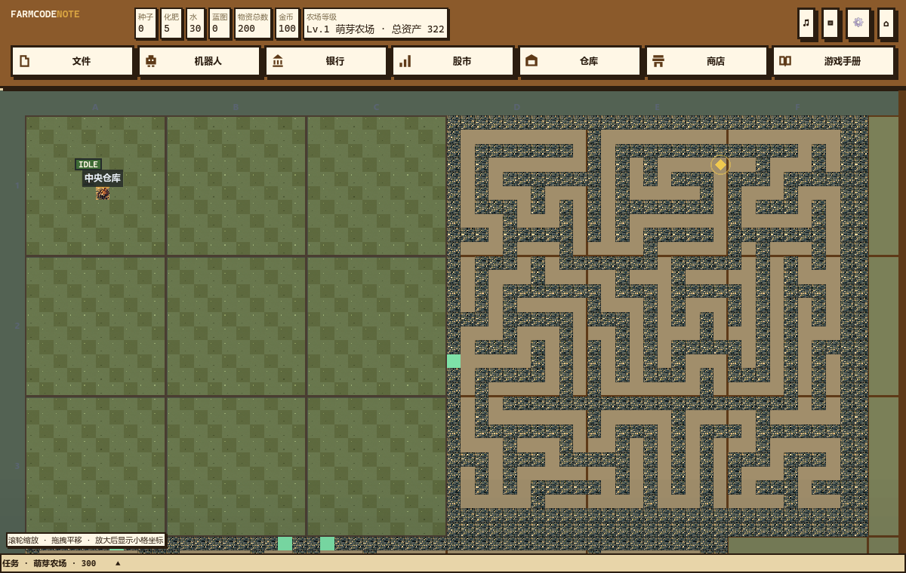

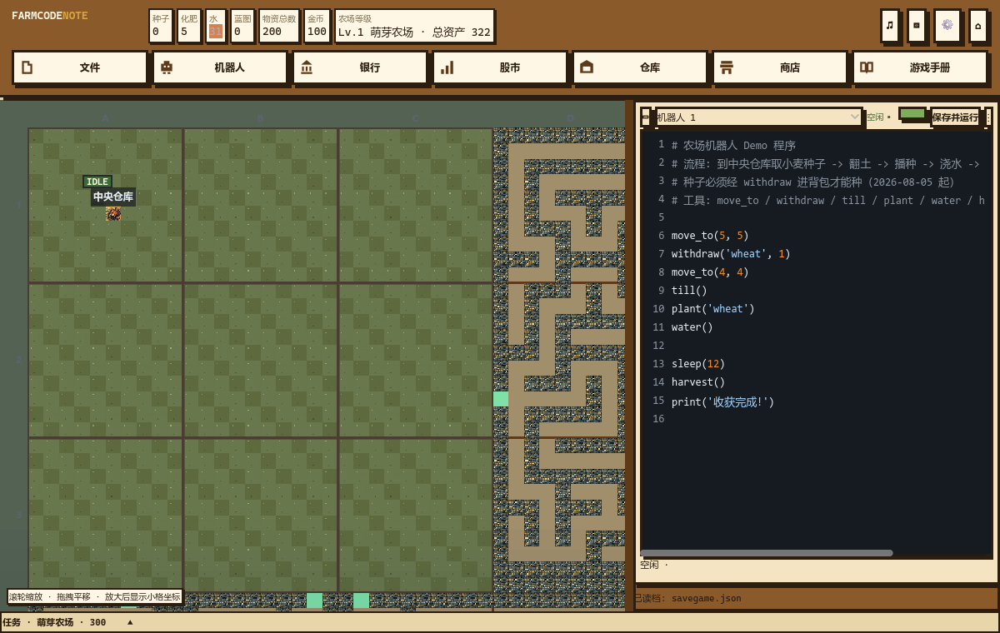

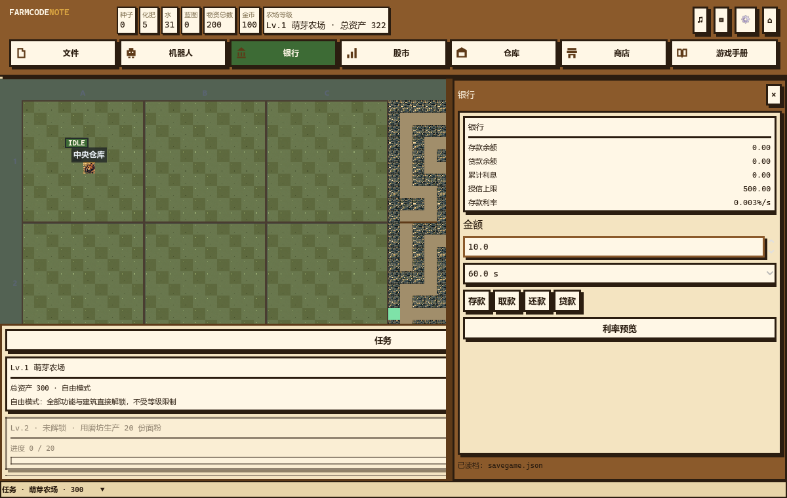

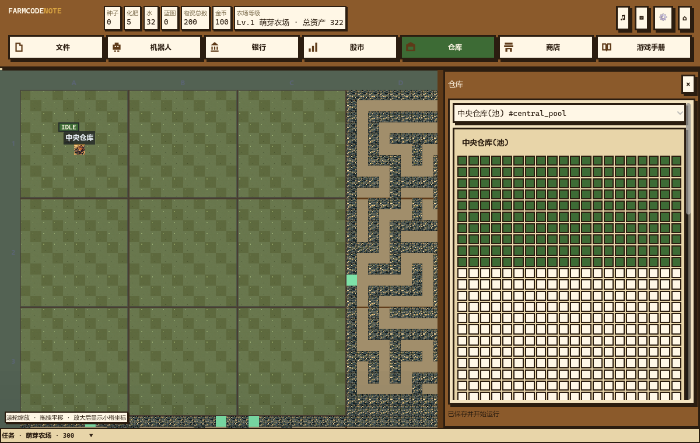

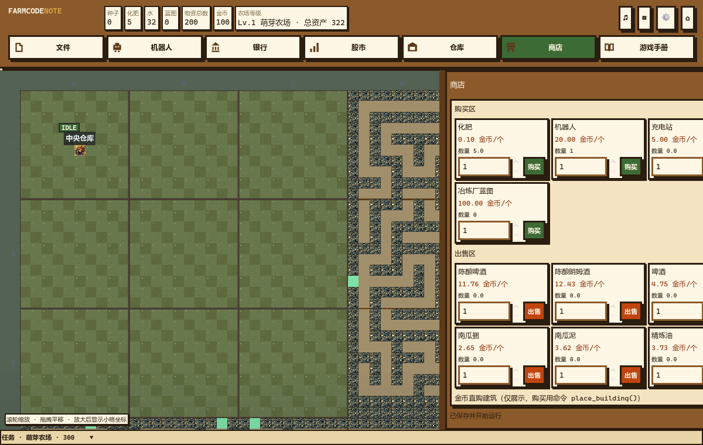

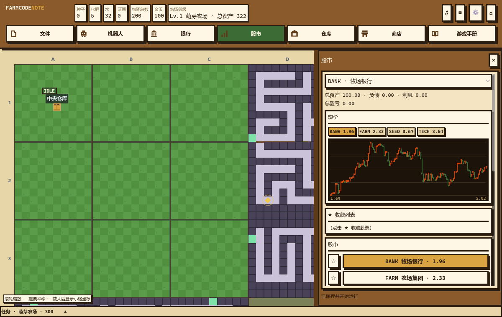

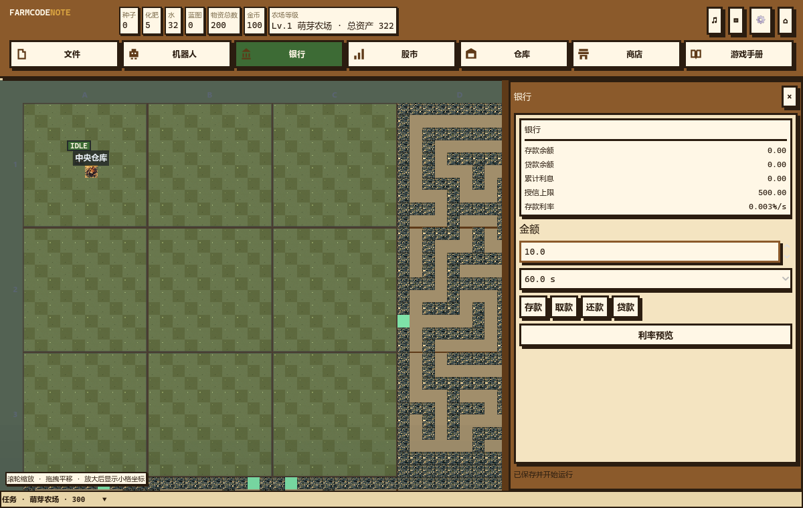

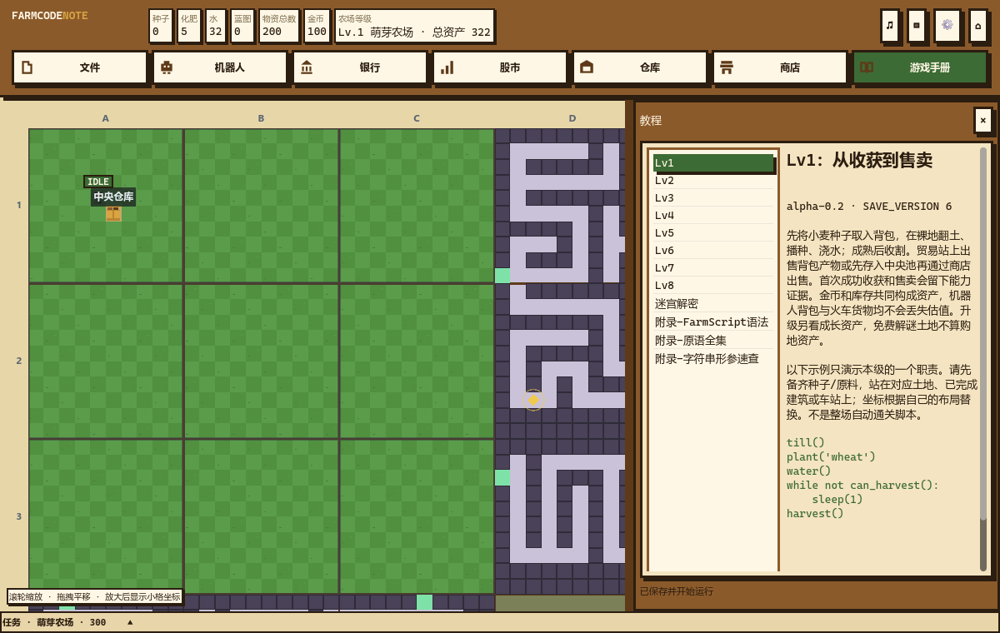

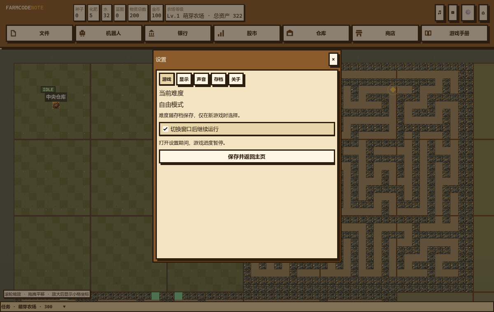

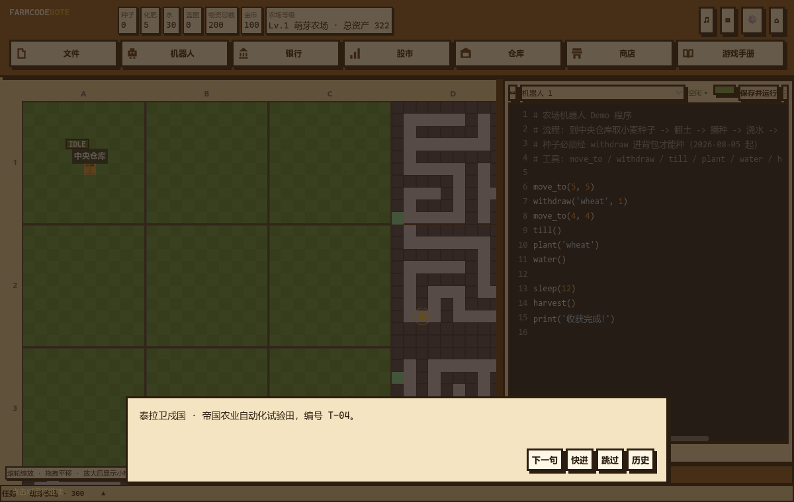